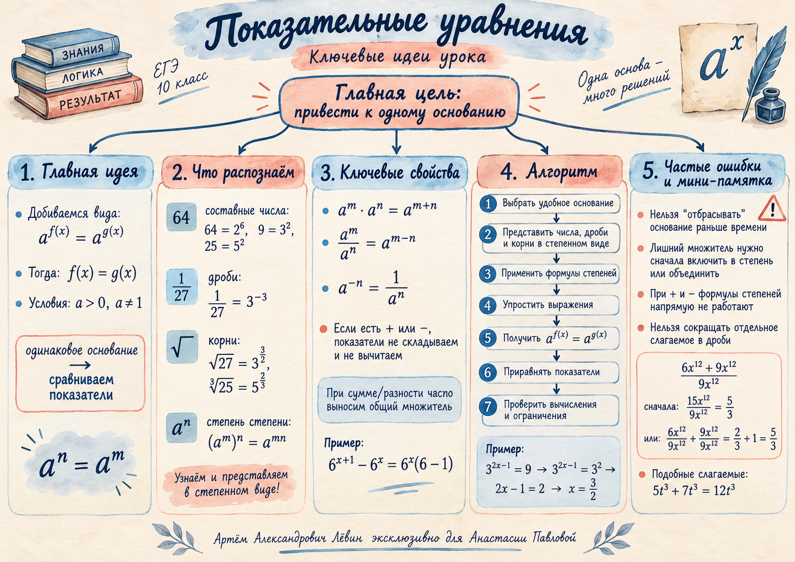

Карта собирает в одной схеме общее основание, перевод дробей и корней, свойства степеней, алгоритм и основные ловушки.

01 · главный принцип
Когда можно сравнивать показатели
Стремитесь получить уравнение вида af(x) = ag(x). Для положительного основания, отличного от единицы, одинаковые степени равны тогда и только тогда, когда равны их показатели.
af(x) = ag(x), a > 0, a ≠ 1 ⇔ f(x) = g(x)
Граница метода. Перед сравнением показателей в каждой части должна остаться ровно одна степень с одинаковым основанием. Дополнительный множитель, делитель, сумма или разность означают, что преобразование ещё не закончено.
Скобки обязательны. Если показатель содержит сумму или разность, при умножении участвует весь показатель: 3(x/3 + 1) = x + 3.
08 · домашняя работа
Сокращаем только множители
В выражении ниже знаменатель содержит x12, поэтому исходное выражение определено только при x ≠ 0.
6x12 + 9x129x12
Путь 1 — привести подобные
6x12 + 9x12 = 15x12 15x129x12 = 5/3
Путь 2 — разделить по членам
6x129x12 + 9x129x12 = 2/3 + 1 = 5/3
Нельзя сократить только 9x12 из суммы в числителе. Сокращение работает для общих множителей всего числителя и знаменателя.
Подобные слагаемые
5t3 + 7t3 = 12t3
5t3 · 7t3 = 35t6
09 · дополнительный разбор
Подобие треугольников во вписанном четырёхугольнике
Дано: четырёхугольник ABCD вписан в окружность, прямые AB и CD пересекаются в K; BK = 6, DK = 10, BC = 12. Найти AD.
Треугольники BCK и ADK подобны по двум углам: угол BKC равен углу AKD, а угол BCK равен углу BAD через свойства вписанного четырёхугольника и смежных углов.
ADBC = DKBK ⇒ x12 = 106 ⇒ AD = 20
Практический сигнал: если две секущие проходят через вписанный четырёхугольник и пересекаются вне окружности, проверьте, не образуется ли пара подобных треугольников.
10 · контроль качества
Типичные ошибки
Сравнили показатели слишком рано. Сначала добейтесь одной степени в каждой части.
Оставили множитель перед степенью. Объедините его со степенью подходящей формулой.
Сложили показатели при степени степени. В (am)n показатели перемножаются.
Применили свойства степеней к сумме или разности. Для «+» и «−» нужен другой приём, часто — вынесение общего множителя.
Потеряли скобки. В сложном показателе умножается всё выражение.